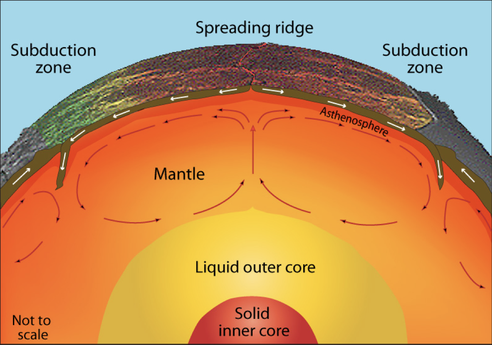

In which we derive the continuum equations for mantle / lithospheric flow, look at various questions of scaling, and develop some intuition for the dominant physics of mantle flow
Mantle Convection
Convection in Earth’s interior is (a little bit) like a boiling pot (as we saw in a previous lecture)

The hot soup rises to the surface, spreads and begins to cool, and then sinks back to the bottom of the pot where it is reheated and rises again. Why does hot soup rise and cold soup sink ?
General Observations on Convection
Without being particularly quantitative:
Hot liquid is more buoyant than cold material and it tends to rise
Cooler liquid is less buoyant and therefore tends to sink
This can only happen if the two can move past each other
Convection produces a self-stirring
Buoyancy forces are at work and viscous forces counteract these forces once the fluid is moving
\[
\textrm{buoyancy} \propto g \rho_0 \alpha(1-\Delta T)
\]
Convection like this will only work when the soup is heated from below or, in the case of the Earth, if it is heated from within by radioactivity. (Can you see why) ?
General Observations on Convection
Definition: Convection is the transfer of heat by the self-organised movement of a fluid. Free convection is when the fluid is stirred entirely by rising buoyant material and sinking negatively-buoyant material. (Forced convection is produced when the fluid is stirred mechanically).
Convection is one of the ways we transfer heat from hot regions deep in the Earth to cooler, shallow regions.
Heat Transfer
Other ways that heat can be transferred include radiation, advection, and conduction.
Advection of heat is where some object carries an excess (or defecit of) heat energy from place to place.
Conduction is the transfer of heat (or electric current) from one substance to another by direct contact (lattice vibrations / electrons).
Radiation is the transfer of heat energy by photons that pass between two materials. It does not require any physical contact or indermediary material (e.g. it is not a problem to transfer heat across a vacuum this way).
“Kmecfiunit, cmglee, CC BY-SA 4.0 <https://creativecommons.org/licenses/by-sa/4.0>, via Wikimedia Commons”
Conduction & Fourier’s Law - i
Fourier’s Law tells us how much heat, \(Q\) is conducted through a sample in a unit time
\[
Q=-\frac{k A \Delta T}{L}
\]
\(A\) is the cross sectional area of the sample, \(L\) is its length, \(k\) is a thermal conductivity “constant” dependent on the nature of the material and often also on the temperature, and \(\Delta T\) is the temperature difference across the sample. (Note the minus sign because heat will always flow from a higher temperature to a lower temperature.)
Conduction & Fourier’s Law - ii
Fourier’s Law is explained using a simple thought experiment such as this one but it actually refers to the fact that heat flows down a temperature gradient.
\[ q = - k \frac{dT}{dx} \]
\(q, (W/m^2)\) is called the heat flux and measures the flow of heat per unit area perpendicular to the temperature gradient
Thermal diffusion & Fourier’s Law
If the heat flux into a region is not balanced by the heat flux out, the region must change temperature. For example, if more heat flow into a region than is flowing out, it will become warmer.
The heat flow in the diagram is away (in both directions) from the high temperature to the cooler areas. The loss of heat from this region is balanced by a reduced temperature.
This process reduces the amplitude of temperature variations over time and makes the temperature smoother. Temperature extremes become smaller, gradients become lower, the heat flux everywhere becomes smaller: the temperature differences decay through time.
Newton’s Law of Cooling
Another example of “thermal decay” occurs when we have a hot body in a cool environment loosing heat through its surface according to the Fourier Law.
The heat flux is proportional to the difference in temperature between the hot object and the surroundings, so
\[
\frac{dT}{dt} \propto T - T_0 \quad \rightarrow \quad T = T_1 e^{-\lambda t}
\]
This is exactly the same equation for the anomalous temperature as for the quantity of a radioactive isotope remaining after a certain time and has the same solution with \(\lambda\) a constant for a particular experiment.
Thermal diffusion
If a region has a different heat flux in v. out, then there must be a gradient in the heat flux. A change in temperature is driven by gradients in the heat flux like this:
\(H\) is internal heat generation which is often important in the Earth because of the decay of radioactive isotopes. Now we substitute for \(q\) from Fourier’s Law and have this expression:
Fourier was one of the first to solve this mathematically and developed his method of summing harmonics (series solutions) as part of this study.
Thermal Diffusion and Planetary Heat flow
The rate of heat loss is a primary controller of how a planet evolves.
The heat loss controls the internal temperature of the planet and its mechanical properties are expected to be dependent on temperature
The rate of heat loss from the interior is related to the energy available to supply mechanical work to deform the planet
The rate of heat loss governs the amount of time the planet can remain “geologically” active before the interior stops exchanging with the surface / atmosphere.
Surface temperature and Heat loss
The Stefan-Boltzmann law tells us the rate at which a hot object loses heat to its surroundings.
\[
P = \varepsilon \sigma A \left( T^4_\textrm{hot} - T^4_\textrm{ambient} \right)
\]
The average surface temperature of the Earth is about 15°C or 288K. This implies a loss of heat at a rate of 2 x 1017 W globally (to the chill of space) We can make some assumptions about the energy content of the Earth to see how long this can be sustained.
Assuming an initial temperature of 1500K (molten rock observed at the Earth’s surface) gives a cooling time of 250,000 years.
That’s quite young !
What is missing / incorrect in this analysis ?
The incoming radiation from the sun (estimated 1.75 x 1017 W) implies the Earth’s surface is near equilibrium with the solar radiation and therefore we should not assume cooling to the cold depths of outer space (how long has this near-equilibrium been established ?)
The assumption that the Earth’s interior is isothermal
The assumption that heat loss from the interior to the surface is perfectly efficient
This analysis might be quite useful for a molten planet (magma ocean) where the heat transport in a vigorously convecting interior is very efficient. Once the planet begins to crystallise, conductive cooling through the chilled surface layers becomes the rate-controlling process.
Solution for the uniform conduction of heat out of a sphere
What is the equilibrium heat flow across a thin spherical shell ?
Which is only interesting if there is internal heating (\(H\)) and otherwise implies constant temperature / no additional heat at depth. Steady-state, of course, tells us nothing about the age of the Earth. \(C_1\) has to be zero, for the solution to be meaningful at \(r=0\).
Transient solution for a sphere cooling from a uniform T
The transient (i.e. interesting) equivalent to this problem is qualitatively different from the steady one. There are now variations with time and these trade-off with variations in the radial direction.
Fourier’s approach was to find solutions in the form of a series of terms, each of which individually satisfies the equations, but none of which, in isolation, looks much like the actual solution.
It says that the temperature changes due to radial temperature gradients and, equally, that radial temperature gradients are established by the changes in temperature.
NOTE: I have left out the material “constants” like thermal conductivity, radius of the sphere, density which means I am assuming these are all 1 (and constant)
Transient solution for a sphere cooling from a uniform T (2)
The term in red is the initial temperature distribution. If we assume that this is uniform everywhere, then this is simplified to the point where we can easily evaluate the solution:
Ignoring how we come by this (complicated-looking) solution for the time being, what do these terms actually look like ?
A fundamental objection to Fourier’s original approach to solving equations by series solution is that the harmonics can violate the boundary conditions and other physical constraints.
Transient solution for a sphere cooling from a uniform T (4)
How do the harmonics look when added together to give an approximation to the solution ?
The solution does satisfy the boundary conditions and the physical constraints. Note that the smaller time solution has much sharper gradients and many more terms are required to accurately approximate the solution.
Transient solution for a sphere cooling from a uniform T (4)
This is, essentially, the simplest version of the Kelvin estimate for the age of the Earth based on a uniform internal temperature.
The cooling of a semi-infinite domain
This is a problem not unlike the cooling sphere, but with no inherent length scale that comes from the boundary conditions. The equations are similar but we are working in a Cartesian geometry (and also ignoring all the constants !)
\[
\newcommand{\erfc}{\mathop{\rm erfc}\nolimits}
T = \erfc\left(\frac{z}{2\sqrt{t}}\right)
\]
This is a very different solution strategy to the cooling sphere (and yet they should, in a mathematical sense, approach each other as the radius becomes large).
The solution looks very similar in character: a cooling front which propagates in from the surface. The curves are self-similar, they just differ by a scaling factor.
Rate of change of a quantity, \(\phi\), is the balance between fluid transport across the boundary, \(\Gamma\), of an arbitrary volume, \(\Omega\), the diffusive flux, and sources within the volume.
The volume is arbitrary, so the equation must be valid for any choice of \(\Omega\) only guaranteed if the integrand is zero.
Source terms are body forces (here gravitational, buoyancy forces)
Flux across the boundary is due to tractions applies on the boundary from stresses in the fluid:  \(t_i = \sigma_{ij} n_j\) where \(\hat{\mathbf{n}} = \left\{ n_j \right\}\) is the normal vector at a point on the surface
Note the appearance of the directional derivative acting on velocity, \(\left( \mathbf{v} \cdot \nabla\right) \mathbf{v}\) which is quite complicated in the vector version.
Examples - 3. Momentum (2)
The operator in the momentum equation \(\left( \mathbf{v} \cdot \nabla\right) \mathbf{v}\) stretches the vector notation quite hard, and demands explanation.
Let us look at a similar operator, the directional derivative of a vector, \(\mathbf{u}\):
are the deviatoric and total stress tensors, respectively. This definition of the stress in terms of a material property (\(\eta\), the dynamic viscosity), allows us to write:
\[
\rho \left( \frac{\partial \mathbf{v}}{\partial t}
+ (\mathbf{v} \cdot \nabla) \mathbf{v} \right) =
\eta \nabla^2 \mathbf{v} - \nabla p
- g \rho {\mathbf{z}}
\] The second form assumes that the viscosity is a constant and produces the familiar form of the Navier-Stokes equation. The first form is required if the viscosity varies.
Navier-Stokes Equation / Convection
\[
\rho \left( \frac{\partial \mathbf{v}}{\partial t}
+ (\mathbf{v} \cdot \nabla) \mathbf{v} \right) =
\eta \nabla^2 \mathbf{v} - \nabla p
- g \rho_0 \alpha \left( T - T_0 \right) {\mathbf{z}}
\]
\[
\left( \frac{\partial T}{\partial t} + \mathbf{v} \cdot \nabla T \right)=
\kappa \nabla^2 T + \frac{H}{C_p}
\]
We combine Navier-Stokes equation driven by thermal buoyancy, and the expression for the time-evolution of the temperature field. The two equations are coupled through \(T\). The various physical properties and their units are listed below.
\[
\begin{array} {l|l|l}
\hline \textrm{Viscosity} & \eta & Pa \cdot s \\
\hline \textrm{Temperature scale} & \Delta T = T-T_0 & K \\
\hline \textrm{Lengths} & x & m \\
\hline \textrm{Thermal expansivity} & \alpha & K^{-1} \\
\hline \textrm{Gravity} & g & m.s^{-2} \\
\hline \textrm{Density} & \rho & kg.m^{-3} \\
\hline \textrm{Thermal diffusivity} & \kappa & m^2.s^{-1} \\
\hline
\end{array}
\]
Non-dimensional Navier-Stokes
It should not matter if we work in SI units cgs units or Imperial units — the physics does not change and the system does not care about our choice. That means there should be a way to express the equations without having to define specific units at all (or some sort of natural units for the problem that make everything close to 1).[*]
We can rescale all our numbers by typical values of length, time, temperature etc. We have to be consistent (remember dimensional analysis) so these choices work, for example:
\[
\begin{array} {lll}
x \leftarrow d . x' & \partial / \partial x \leftarrow (1/d) . \partial / \partial x' & \nabla \leftarrow (1/d) \nabla' \\
t \leftarrow d^2 / \kappa . t' & \partial / \partial t \leftarrow (\kappa/d^2) . \partial / \partial t' & \mbox{} \\
T \leftarrow \Delta T . T' & \mbox{} & \mbox{} \\
\mathbf{v} \leftarrow (\kappa / d) \mathbf{v}' & \mbox{} & \mbox{} \\
p \leftarrow p_0 - (\eta \kappa / d^2 ) p' & \textrm{Note:} \; \nabla p_0 = - g \rho_0 & \mbox{} \\
\end{array}
\]
[*] this is what people used to do — feet / inches for carpenters, furlongs for farmers / horses.
Non-dimensional Navier-Stokes (2)
\[
\frac{\rho_0 \kappa}{d^2} \frac{D}{Dt'} \left( \frac{\kappa}{d} \mathbf{v}' \right) =
\frac{\eta}{d^2} \acute{\nabla}^2 \left( \frac{\kappa}{d} \mathbf{v}' \right)
- \frac{\eta \kappa}{d^3} \acute{\nabla} p' + g \rho_0 \alpha \Delta T T' {\mathbf{z}}
\]
Tidying up as much as we can:
\[
\frac{\rho_0 \kappa^2}{d^3} \frac{D\mathbf{v}'}{Dt'} =
\frac{\eta \kappa}{d^3} \acute{\nabla}^2 \mathbf{v}'
- \frac{\eta \kappa}{d^3} \acute{\nabla} p' + g \rho_0 \alpha \Delta T T' {\mathbf{z}}
\]
We have separated out the form of the equation from its scaling by going through this process. The primed variables can be re-inflated to their normal size using the scalings from the previous slide. The new parameters in the equation are dimensionless ratios (they have to be since all the primed variables are ratios).
Non-dimensional Navier-Stokes (3)
Rayleigh number - measures the intensity of the buoyancy forces and their ability to counter the effects of thermal diffusion and viscosity in damping motion driven by buoyancy
Prandtl number - measures the relative importance of stress diffusion and thermal diffusion and is purely a material property (no reference to the geometry, length- or time-scales).
Reynolds number - measures the relative importance of inertial to viscous forces. The Reynolds number is commonly used in fluid dynamics where it is an indicator of the transition from steady flow, unsteady laminar flow, through to turbulent flow.
The Reynolds number does not contain any reference to the thermal state but this means that there is no natural length/time scaling and so the definition can be subjective.
Non-dimensional Navier-Stokes (4)
Questions
What is the Prandtl number for (1) Water, (2) A planet ?
What is the Reynolds number for plate-tectonic motions ?
Estimate the Rayleigh number for the Earth.
Discussion points:
If the Prandtl number is very large, how long does it take for the Navier-Stokes equation to adjust to changes in buoyancy forces or boundary conditions ?
What is the Reynolds number for mantle flow / plate tectonics ? How about for flow in the Earth’s outer core ?
A similar scaling question: what (roughly) is the kinetic energy of the Pacific plate ?
Incompressible flow and the stream function
In all the derivations so far we assume two incompatible things:
Flow is driven by buoyancy forces that result from changes in density
It is not unusual to make the approximation that fluids are incompressible (even for air if the Mach number is “small”) and we do not lose a lot of detail if we do this. We assume that the density variations are small so they are only important when they appear in a term that does not depend on the actual density but only the density gradient (e.g. buoyancy)
This is called the Boussinesq approximation.
Pressure becomes a constraint parameter rather than a physical pressure (cf a Lagrange multiplier) and the constraint equation is: \[
\nabla \cdot \mathbf{v} = 0
\]  Constrained PDEs can be very hard to solve, but there are some tricks that allow us to directly incorporate the pressure constraint.
Incompressible flow and the stream function (2)
The stream-function is a scalar quantity which defines a 2D incompressible flow everywhere. It satisfies: \[
v_1 = -\frac{\partial \psi}{\partial x_2}; \quad
v_2 = \frac{\partial \psi}{\partial x_1} \quad
{\color{DarkOrange} \textrm{compare this to }
\mathbf{v} = \nabla \times (\psi {\mathbf{k}})
\textrm{: the curl of an out-of-plane vector}
}
\]
and this automatically implies \[
\frac{\partial v_1}{\partial x_1} + \frac{\partial v_2}{\partial x_2} = 0 \quad
\textrm{(i.e. incompressibility)}
\] and \[
(\mathbf{v} \cdot \nabla) \psi =
v_1 \frac{\partial \psi}{\partial x_1} +
v_2 \frac{\partial \psi}{\partial x_2} =
\frac{\partial \psi}{\partial x_2} \frac{\partial \psi}{\partial x_1} -
\frac{\partial \psi}{\partial x_1} \frac{\partial \psi}{\partial x_2} = 0
\] i.e \(\psi\) does not change as a result of advection
Note: a more general, 3D version of this derivation is the Helmholtz decomposition of a vector field into irrotational and a solenoidal (divergence free) parts:
Vorticity is defined as \(\boldsymbol{\omega} = \nabla \times \mathbf{v}\) but in 2D, there is just one component of this equation and we treat it as a scalar (\(\omega \leftarrow \omega_3\))
If we take the curl of the Navier-Stokes equation we find we can eliminate the pressure gradients as \(\nabla \times \nabla P \equiv 0\). For infinite Prandtl number, the L.H.S vanishes.
The Navier-Stokes equation describes the momentum balance in a viscous fluid in response to buoyancy forces and pressure gradients. In a rotating system, we may also need to consider the influence of Coriolis, and centrifugal forces
Pressure-like terms are all gathered into \(p^*\) and include contributions from the centrifugal force term
Convection and the Mantle: A Toy Model
Imagine a tank of thick, viscous fluid (like syrup, for example). This turns out to be a reasonable model for the interior of a solid (rocky / icy) planet if we consider the evolution on a geological timescale. A cold / dense blob of material sinks and stirs a tank of fluid just like this computer model shows.
What is viscosity ?
Viscosity is a measure of the resistance of a fluid to deform under shear stress. It is commonly perceived as “thickness”, or resistance to flow. Viscosity describes a fluid’s internal resistance to flow and may be thought of as a measure of fluid friction. Water is runny, having a lower viscosity, while honey is “thick” having a higher viscosity.
Viscous deformation is an irreversible flow that occurs in response to an applied shear stress. The stress is found to depend on the strength of the shearing velocity gradient.
\[
\tau = \eta \frac{d v_1}{d x_2}
\]
Think of this as the stress that resists the shear deformation, i.e. how hard it is to stir the fluid. This is much harder if the fluid is more viscous. Or think of it as how fast the fluid responds to a given force (e.g. gravity) so a viscous gravity current will spread more slowly if the viscosity is high.
Viscosity only opposes the formation of velocity gradients; not a driving force, only a resistance.
The Toy Model Examined
In this toy model, do hot blobs and cold blobs behave in the same way (other than moving up v. moving down ?) - is this what you expect from the NS equation ?
The Toy Model - Examined
Now let us think about how the physical properties of the fluid and the boundary conditions change how this blob behaves.
\[ \textrm{Activity} = \frac{\textrm{Whatever tends to enhance the flow}}{\textrm{Whatever tends to retard the flow}} \]
We will consider how the behaviour changes with various parameters. When we change a parameter does it tend to enhance flow or retard it ?
The advantage of the detailed analysis / re-scaling, is that we obtain the true dimensionless ratios.
Thermal Convection
In very-viscous convection, only the Rayleigh number plays a role (\(\mathrm{Re}\rightarrow 0\) and \(\mathrm{Pr} \rightarrow \infty\))
The structure of the flow and the pattern of the temperature field is predictable once we know the Rayleigh number but it is helpful first to develop some feeling for the patterns by seeing them.
Blue is cool, red is warm. The bottom of the box is kept hot, the top cold and the difference in temperature is \(\Delta T\), the depth of the box is \(d\) and so on. These numbers are set up so that the Rayleigh number is the required value. In a lab experiment, the simplest parameter to change is \(\Delta T\) assuming that the material has a constant viscosity with \(T\) and does not freeze, melt, burn or boil.
Thermal Convection (ii)
Rayleigh number: \(Ra=100\)
Thermal Convection (iii)
Rayleigh number: \(Ra=1,000\)
Thermal Convection (iv)
Rayleigh number: \(Ra=10,000\)
Thermal Convection (v)
Rayleigh number: \(Ra=100,000\)
Thermal Convection (vi)
Rayleigh number: \(Ra=1,000,000\)
Thermal Convection (vii)
Rayleigh number: \(Ra=10,000,000\)
Flat Earth, Round Earth
Rayleigh number: \(Ra=1,000,000\)
The pattern is not changed much when we make the box a little wider
Flat Earth, Round Earth (ii)
Rayleigh number: \(Ra=1,000,000\)
Curvature does not qualitatively alter the picture
Flat Earth, Round Earth (iii)
Rayleigh number: \(Ra=1,000,000\)
Some sensitivity to initial conditions
Flat Earth, Round Earth, 3D
In the sphere, the patterns are harder to see by eye, but it turns out that we can draw general conclusions from the 2D cases and they still hold in 3D.
Steady State Convection
In many of the examples, we reach a steady state in which the system stops changing and the movies appear to be frozen.
However, this steady state actually represents a dynamic balance between:
heat conduction into and out of the model at the bottom and top respectively
heat advection by continual rotation in the fluid that drags hot material between the two boundaries
Again, the best thing is to watch the system evolve and get a feel for what happens.
Steady State Convection (ii)
Rayleigh number: \(Ra=100,000\)
Steady State Convection (iii)
Rayleigh number: \(Ra=1,000,000\)
Steady State Convection
Rayleigh number: \(Ra=10,000,000\)
Understanding Thermal Convection
A relatively simple pattern emerges from the competition between advection of heat by fluid flow and diffusion:
Convection cells that become independent
Boundary layers where horizontal advection balances vertical diffusion
Rotation in the middle of the box without much deformation
Understanding Thermal Convection (ii)
Convection length and timescales are determined by the Rayleigh number.
High \(\mathrm{Ra}\) narrower boundary layers, higher temperature gradients
High \(\mathrm{Ra}\) more likely to be time-dependent, unsteady
Low \(\mathrm{Ra}\), convection suddenly shuts off
We will see this picture again when we consider the patterns of heat flow in the Earth’s ocean floor.
Average temperature
Taverage
The temperature (velocity, stress etc) profiles vary systematically with \(\mathrm{Ra}\).
Nusselt number
Another, independent, dimensionless quantity can be derived for the convecting system and it is called the Nusslet number.
\[ \mathrm{Nu} = \frac{Q d}{k \Delta T} \]
Which is the ratio of the heat transported in the convection model (\(Q\)) compared to what would be transported if only conduction were at work. It turns out that
\[ \mathrm{Nu} \propto \mathrm{Ra}^{1/3} \]
The results (right) are from an experiment using liquid He which could not be much more different that solid rock but the principals still hold and the agreement with theory is excellent
Critical Rayleigh number
It can be a little difficult to see from a small set of movies, but if we reduce the Rayleigh number enough, conduction completely wins over advection and no motion takes place at all.
This can be approached theoretically, and we find that there is a critical value of the Rayleigh number and a critical wavelength where this transition occurs.
\[\mathrm{Ra}_c = \frac{27}{4} \pi^4 = 657.51 \]
and
\[ k = \frac{\pi}{\sqrt{2}} = 2.22 \]
If \(\mathrm{Ra} \gg \mathrm{Ra}_c\) then convective motion is inevitable
Discussion: Ra for the Earth’s Mantle
Use the following values: - Gravity, \(g \approx 10 \mathrm{m/s}^2\) through the mantle - Density, \(\rho_0 \approx 3000 \mathrm{kg/m}^3\) - Thermal Expansivity, \(\alpha \approx 10^{-5} \mathrm{K}^{-1}\) - Temperature drop, \(\Delta T \approx 2000 \mathrm{K}\) - Thickness of the mantle, \(d \approx 3000 \mathrm{km}\) - Thermal diffusivity, \(\kappa \approx 10^{-7} \mathrm{m}^2 / \mathrm{s}\) - Viscosity, \(\eta \approx 10^{22} \mathrm{Pa.s}\)
\[ \mathrm{Ra}_{\textrm{Earth}} = ? \]
Is it above the critical value ?
What does that tell us ?
Summary
Convection is a heat engine (i.e. it converts heat energy into mechanical work)
Convection is a balance between heat transported by fluid motion and diffusion. The fluid self-organises to create large scale patterns “out of nowhere”
In tanks of viscous fluids like syrup or honey, convection depends on just the one free parameter which is a combination of fluid properties, geometry and boundary conditions — this is called the Rayleigh number (Ra).
If we know Ra, we can predict the heat flow and typical velocity of the system
If Ra is below a critical value, convection dies away but if it is more than (about) ten times this value then convection cannot be suppressed. The Earth’s mantle is very much super-critical and so it must be convecting.
None of these simple models actually produce plate tectonics but they do still tell us about the heat flow in the Earth.